Kuriyama
Kuriyama · Hokkaido
Kuriyama
Highlighted on the Hokkaido map.
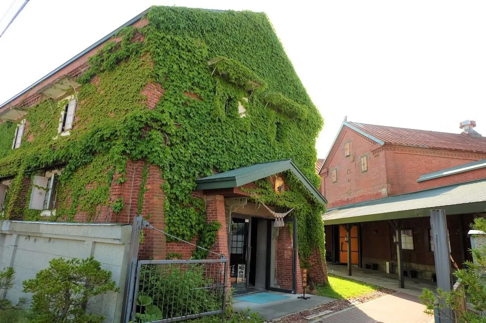
Stay
くりやま旅館
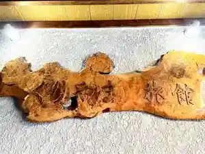
Kuriyama Ryokan
シャトレーゼホテル栗山
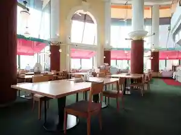
Shatoreezehoteru Kuriyama
友愛ファームゲストハウス
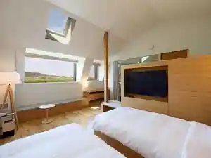
Yuuai Faamugesutohausu
ART×OUTDOOR VILLAGE栗山
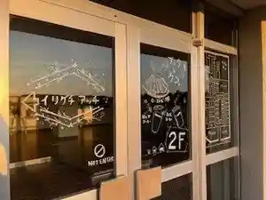
Art X Outdoor Village Kuriyama
Dining
アース
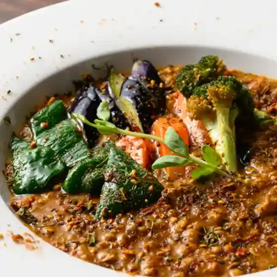
Aasu
おらが村
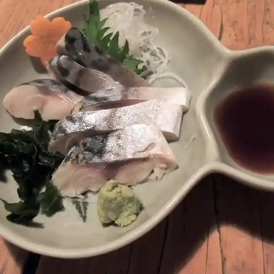
Oraga Mura
Graines de Folie
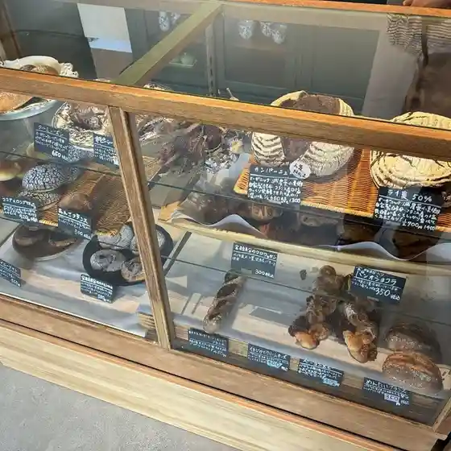
Graines De Folie
マミーズショップ
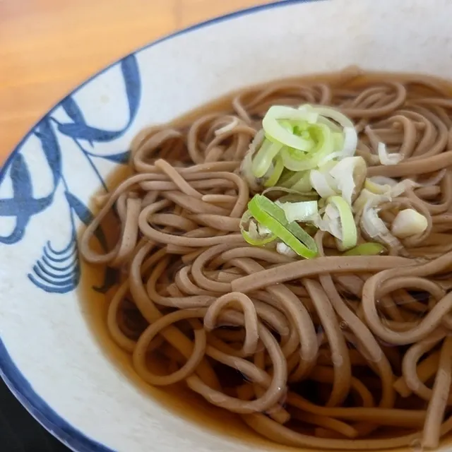
Mamiizushoppu
かき氷&フード ぽけっと
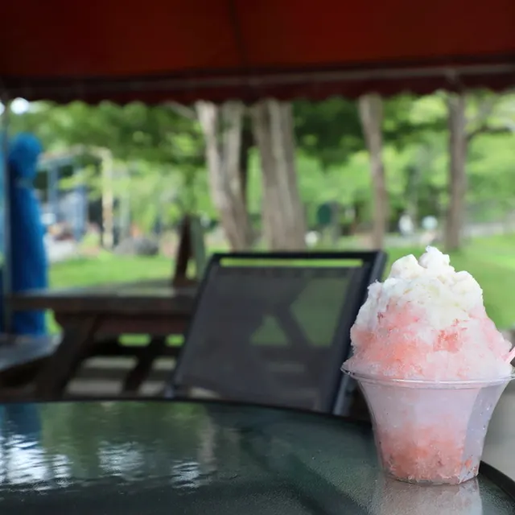
Kaki Koori & Fuudo Poketto
友愛ファームゲストハウス
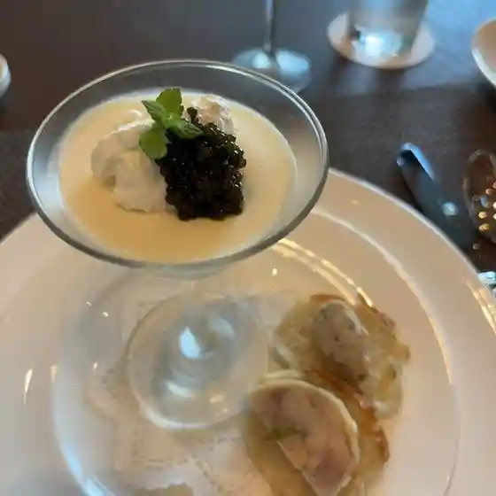
Yuuai Faamugesutohausu
魔法のらんぷ くりやま工場
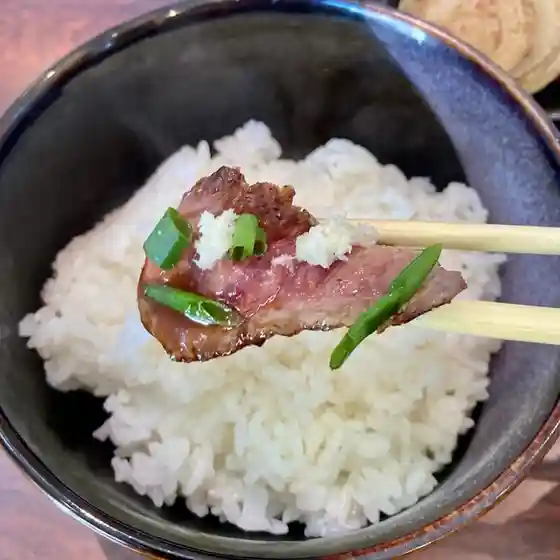
Mahou Noranpu Kuriyama Koujou
くりふとキッチン
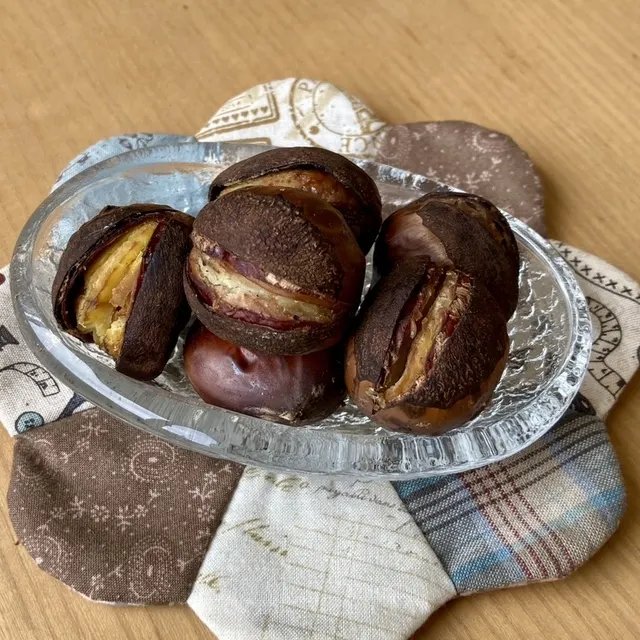
Kurifuto Kitchin
玉ちゃん
Tama Chan
栗夢プラザ
Kuri Yume Puraza
The北海道ファーム
The Hokkaidou Faamu
三勝
San Kachi
生たまご飯ラボ
Nama Tamago Meshi Rabo
今村農園
Imamura Nouen
味道広路
Aji Michihiro Michi
はらへー太
Harahee Ta
ツルハドラッグ 栗山中里店
Tsuruhadoraggu Kuriyama Nakazato Mise
カフェ 麗燈露
Kafe Rei Tou Tsuyu
ワイズ カフェ & バー
Waizu Kafe & Baa
MOLLY'S SMOKED
Molly'S Smoked
陶芸cafe ねことらまえ
Tougei Cafe Nekotoramae
beer&bar くりとくら
Beer&Bar Kuritokura
クレープハウス カスタノ
Kureepuhausu Kasutano
炭火焼鳥竜巻屋
Sumibi Yakitori Tatsumaki Ya
Sights
Kobayashi Shuzo Kenzobutsu Gun
Kobayashi Shuzo Kenzobutsu Gun